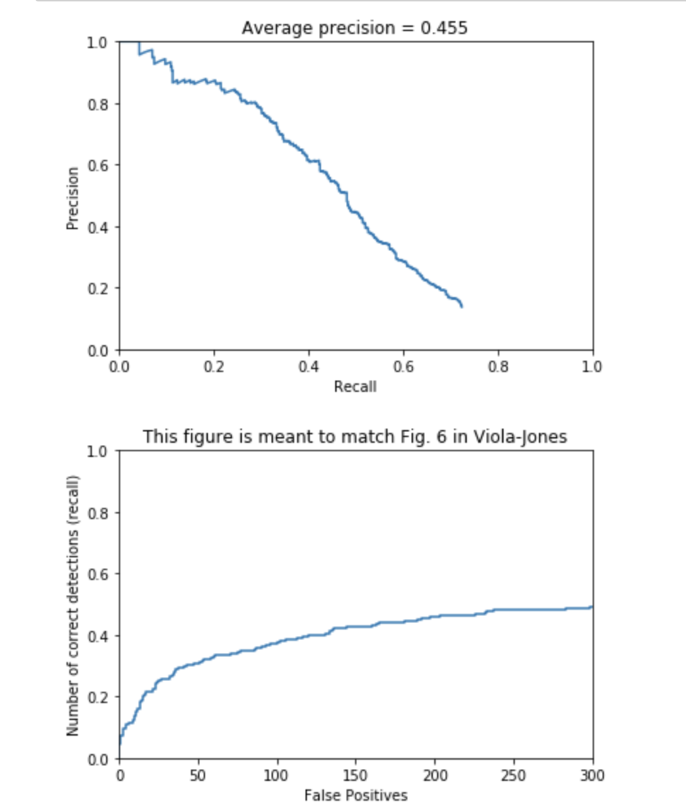
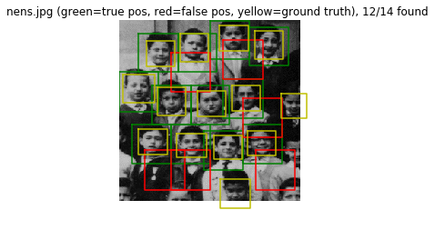
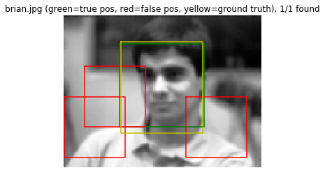
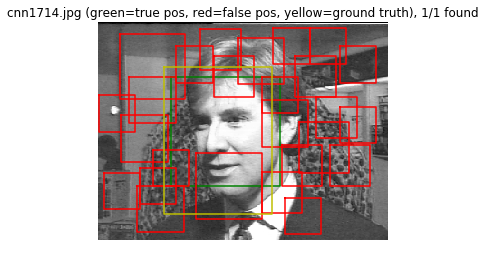
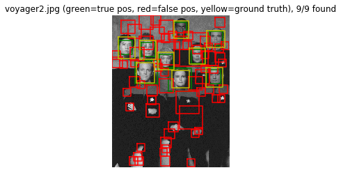
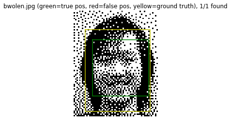
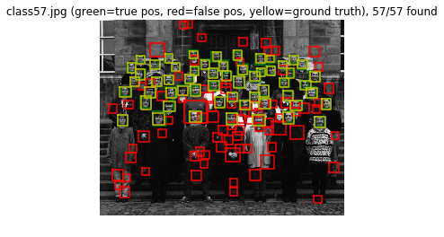
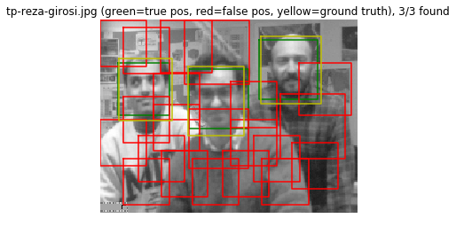
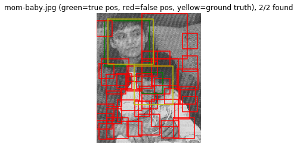
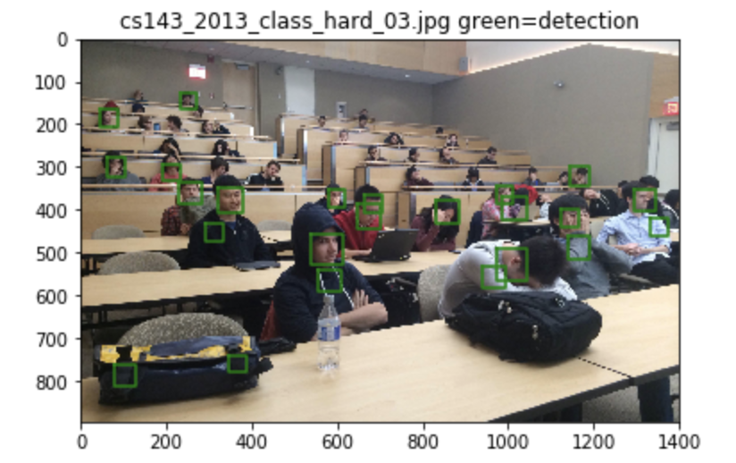

In this project, a sliding window face detector algorithm was implemented using Dalal and Triggs. Dalal and Triggs uses SIFT-like HoG features for identifying objects. In this project the following tasks were implemented :
In order to get features corresponding to faces, 36*36 face images taken from the Caltech Web Faces project dataset containing 6713 images. HoG features were extracted for each of these images. These features were then reshaped to 1*1116 size and put into an array. An array of size 6713*1116 was obtained as output. The positive training data was augmented by flipping the original image and then extracting the HoG features of the flipped image for Extra Credit. This helped in doubling the size of the original training data.
In order to get random negative features corresponding to non-faces, different patches of size 36*36 were extracted from the image on single scale to get HoG features. There were a total of 274 images which were split into patches of 36*36 to extract features for non-faces. In addition to this,random negative samples at multiple scales were obtained for extra credit as discussed below.
A SVM classifier was trained using the features corresponding to faces and non-faces. These features were stacked to get X_train and the outputs corresponding to faces were taken as 1 and outputs corresponding to non-faces were taken as -1. These vectors of 1 and -1 were stacked to form y_train. Different values of C like [1e-4,1e-3,5e-2,1,5] were experimented. The best results were observed with C = 5e-2. The False positive rate was observed to be 0.069% and False negative as 0.179%.
Here the images corresponding to non-faces was given as input and the corresponding HoG features were extracted. The svm object was used to predict the output of the features. In case the output of svm.predict(features) is 1 then it is a 'False Positive'. The features corresponding to such images are appended to the 'negative_features' in order to get better results.
Here the detection was done at a single scale using scale_factor = 0.65. cv2.resize() was used to resize the image as per the scale factor. HoG features were then computed for these resized image. 6*6 windows from the HoG features were taken using a stride = 1 and reshaped. These features were then given as input to svm.decision_function(). The output was the confidence score. If the confidence is greater than some threshold which was set to -1, then the co-ordinates of these features are stored. These co-ordinates correspond to co-ordinates of the HoG features, and hence need to be rescaled by multiplying by (template_size/scale_factor) in order to get co-ordinates of the raw image. The image co-ordinates coresponding to face were used to form bounding boxes. The bounding boxes store the [xl,yl,xh,yh]. The confidence values were also stored. The proposed bounding box information along with the confidence values was passed to the NMS algorithm to filter the most confident boxes and eliminate repetition at similar locations. The NMS algorithm selects the bounding boxes with topk best confidence scores. The topk value was set to 1000.
The AP was observed to be 0.455 as shown in figure below.
  In order to improve the accuracy further detection was done at multiple scales. In run_detector() the image was scaled using [0.9,0.8,0.7,0.65,0.5,0.3,0.2] scaling factors and the results were observed as giving AP = 0.759 for get_random_negative_features() and AP = 0.762 for mine_hard_negs(). Here, the random_negative_features were obtained on single scale only.
In order to improve the results, the training data was increased. For getting face data, the given images were flipped and HoG features were extracted from them in addition to the original images. This led the positive training data to become twice its original size i.e. 6713*2=13246.
In order to increase non-face data, multiscaling was done at [1.0, 0.8, 0.65] scales on the images. Multiple windows of 36*36 were extracted and their corresponding HoG features were extracted. Then 13000 features were selected at random. This ensured that the SVM was given almost equal positive and negative data.
The AP was observed to be 0.83 for get_random_negative_features() and 0.834 for mine_hard_negs() as shown in figures below. The precision goes on dropping indicating that the number of false positives increases.
|     |
|     |